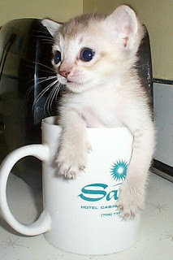

Find out more about the singapura Here

Singapuras are native in their homeland, Singapore. There are no records or background to
show that any cross-breeding took place. The name “Singapura” is Singapore in Malaysian,
and these cats were believed to have been around for more than 300 years, descended from cats
who came in Singapore and bred with the local cats.
The Singapura is the smallest breed of domestic cat which is known for its large eyes
and ears and close-lying ticked fur. They are said to have originated from drain cats
in Singapore although their history is shrouded with controversy. Singapuras are enchanting
and everybody who one is won over by their inquisitive, laid-back and friendly personality
who is easy to care for and will remain playful well into adulthood.
Breed Characteristics
- Other names: Drain Cat, Singapore River Cat, Kucinta
- Activity: Moderate to high
- Coat: Short
- Colours: Brown (sepia) ticked
- Lifespan: 12-14 years
- Eyes: Hazel, green, yellow
- Good with children? Excellent
- Temperament: Playful, outgoing, curious, loving
- Weight: Males 4 – 5.5 kg (8.8 – 12.1 lbs), females 3.5 – 4 kg (7.7 – 8.8 lbs)
- Grooming: Once a week
- Cost: $1,000 +